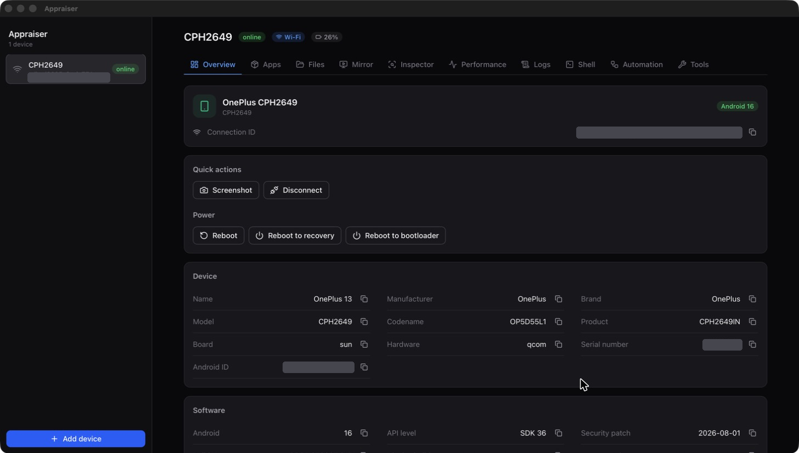
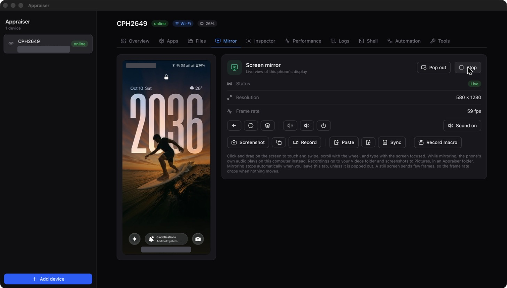
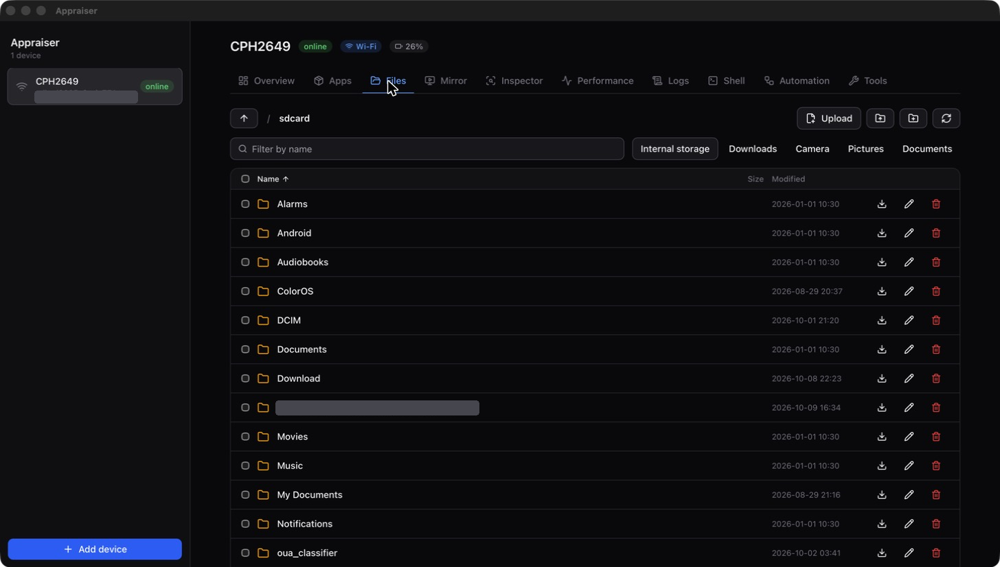
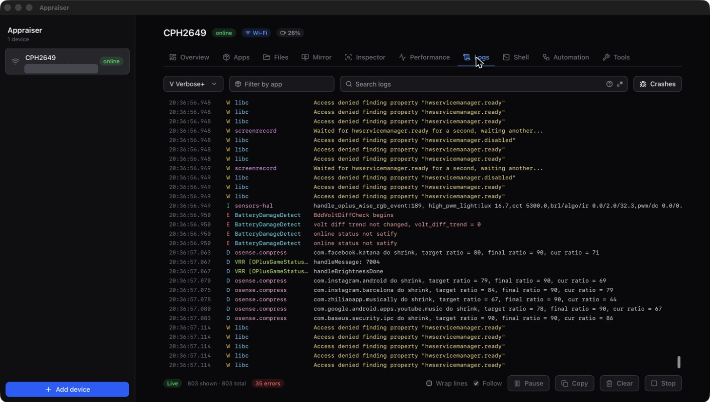

Screenshots




Features
Apps
Install by drag and drop, see permissions and storage, extract APKs, clear data, force stop, uninstall.
Files
Browse the phone, upload and download with drag and drop, rename, delete, preview.
Logs
Live logcat with level, app, text and regex filters, a crashes-only view and a fast virtualized list.
Screen mirroring
Touch control, sound, screenshots, recording, clipboard sync, macros and a detachable window.
Shell
A terminal with syntax highlighting and completions for common commands.
Inspector and performance
Inspect the UI hierarchy and watch CPU, memory and more in live charts.
Tools
Intent tester, developer settings, port forwarding, battery simulation and one-click bug reports.
Automation
Saved commands and replayable macros. Run installs and commands on every phone at once.
Wireless
Pair with a QR code. Wireless devices are remembered and reconnected automatically.
Install
| macOS | Download the .dmg, drag Appraiser to Applications. |
|---|---|
| Windows | Download the .msi or .exe installer. |
| Linux | Download the .AppImage, .deb or .rpm. |
Builds are not code signed yet. On macOS, right-click the app and choose Open the first time. On Windows, choose "More info" then "Run anyway" in SmartScreen.
On the phone, turn on Developer options and USB debugging, plug it in and accept the prompt.
Build from source
git clone https://github.com/CSWanigasooriya/appraiser
cd appraiser
npm install
npm run tauri devYou need Rust, Node.js 20+, a JDK and an Android SDK (platform 36 and build-tools 36.0.0), used to build the bundled scrcpy server. See the README.